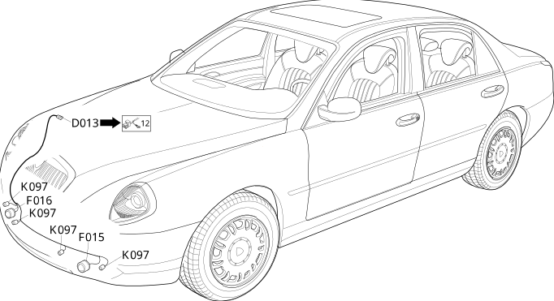

14 front bumper
- Path
- Electrical equipment > Wiring > 14 front bumper
- Kind
- wiring harness
- Applies to
- all engines; all production periods
- Interactive page
- https://sloeber94.github.io/elrnDB-lThss/en/#/207319
Applies to: all engines; all production periods
